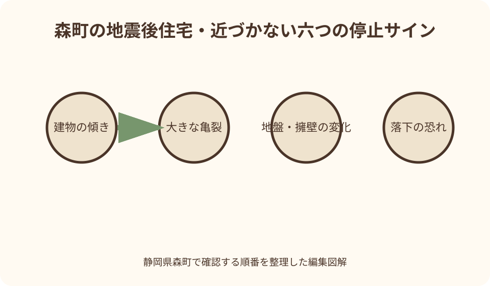
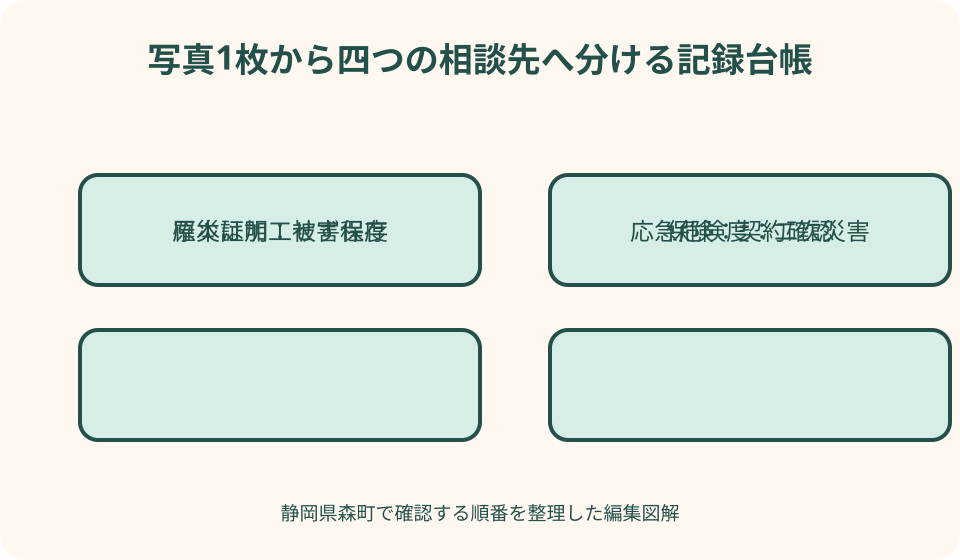

防災・家族の備え｜最終確認 2026-08-10
静岡県森町で地震後に自宅へ戻る前に｜安全確保・写真記録・公的確認
地震後の住宅記録は、自分で建物の安全性を判定する作業ではありません。まず家族と周囲の安全を確保し、危険区域や損傷した建物へ入らず、見える範囲だけを時刻付きで残します。その記録を、森町の罹災証明、県の応急危険度判定、保険会社や建築専門家への相談へ正しくつなぎます。

編集イラスト結論：記録より安全、写真より専門確認を優先する
地震後に自宅へ戻る判断を急いではいけません。家族、近隣の火災、道路、斜面、電線、建物外観を安全な距離から見て、一つでも危険が疑われれば近づかないことが第一です。記録は安全を確保した後に行います。
外観写真を撮れた、壁に亀裂が見えない、扉が開いたという事実は、建物が継続使用できる保証になりません。構造や地盤の危険は住民の目視だけでは判断できないため、公的な判定や建築の専門家へつなぎます。
写真は、被害の経過、森町の罹災・被災証明、保険会社、修理業者との相談に役立つ記録です。しかし写真のために危険な敷地へ入る、家具を動かす、屋根へ上る行為は目的と手段が逆転しています。
この記事の事実確認日は2026年8月10日です。災害ごとに町の窓口、判定区域、申請方法、道路規制は変わり得ます。実際には森町と関係機関の最新発表を確認し、緊急時は119番、110番などを優先してください。
帰宅経路そのものが安全かを先に確かめる
森町には河川沿いの道路と山あいの経路があり、地震後は橋、路肩、斜面、倒木、落下物で普段の道が使えない可能性があります。自宅の状態を見るためだけに、通行止めや危険表示を越えてはいけません。
森町防災ハザードマップは、土砂災害危険箇所や河川氾濫区域、防災関係施設の位置を地区別に示します。地震後のリアルタイム道路状況ではありませんが、平時に避けたい斜面や代替経路を考える基礎資料になります。
徒歩でも安全とは限りません。ブロック塀、瓦、ガラス、看板、電柱から離れ、切れた電線には近づきません。夜間や停電時に路面損傷が見えない場合は、帰宅を翌日以降へ延ばす選択を家族で共有します。
家族と連絡できないことを、直ちに自宅へ向かう理由にしません。学校や職場の待機方針、171やweb171、遠方の中継連絡先を使い、安全な場所で情報を集めます。帰宅は目的ではなく、安全を回復する選択肢の一つです。
敷地へ入らず周囲から見る停止サイン
建物の傾き、基礎や外壁の大きな亀裂、柱や壁のずれ、屋根材や外壁の落下、隣家の倒れ込みが見える時は、敷地へ入りません。余震で状態が急変する可能性を考え、通行人にも近づかないよう伝えます。
地面の亀裂、沈下、隆起、擁壁の膨らみやずれ、斜面からの落石や湧水なども停止サインです。山間部では建物が無事に見えても、敷地や進入路が不安定なことがあります。観察のため斜面の下へ立ちません。
煙、焦げた臭い、ガス臭、漏水音、火花、垂れ下がった配線がある時は、撮影より退避を優先します。電気スイッチや換気扇を操作せず、火気を使わず、安全な場所から消防や供給事業者へ連絡します。
危険を示すロープ、コーン、貼り紙、公的な判定ステッカーを外したり越えたりしてはいけません。所有者であっても立入りが安全になるわけではありません。家財を取りに入る必要がある場合も担当機関へ相談します。
応急危険度判定と住家被害認定を混同しない
静岡県が案内する被災建築物応急危険度判定は、地震後の余震などによる倒壊や落下物の危険を防ぐため、判定士が被災建物の危険度を応急的に調べる制度です。被災直後の二次災害防止が目的です。
結果は「危険」「要注意」「調査済」の三種類のステッカーで表示されます。「調査済」は将来の余震を含む絶対安全の証明ではありません。表示の注意事項を読み、勝手にはがさず、状況変化があれば再び離れます。
一方、罹災証明のための住家被害認定は、被害程度を証明して生活再建支援などへつなぐ調査です。応急危険度判定と目的、判定内容、実施時期が異なります。片方の結果をもう一方の代わりにしません。
さらに、復旧期に継続使用や補修方法を検討する被災度区分判定など、専門家による別の確認があります。家族の写真記録はこれらを置き換えず、いつ何が見えたかを相談先へ伝える補助資料です。
安全な場所から全景・四方向・周辺を撮る
撮影できる状況なら、最初に道路側から建物全体と周辺が一枚に入る全景を撮ります。次に安全な公道などから各面を撮ります。境界を越えて隣地へ入らず、車両や救助活動の邪魔にならない位置に立ちます。
写真は遠景、中景、近景の順にします。遠景で建物と地盤の関係、中景で一面全体、近景で亀裂や落下箇所を示すと場所が分かります。ただし近景のため危険物へ近づかず、デジタルズームも使います。
撮影時刻、撮影者、方角、立ち位置、何を見たかを音声メモか紙へ残します。「南面、14時20分、外壁の亀裂、道路反対側から」のように記すと、後から写真だけ見ても位置関係を説明できます。
同じ場所を繰り返し撮る場合は、余震後、降雨後など理由を記します。以前より広がったと感じても、自分で幅を測るため壁へ触れません。変化が疑われる時点で離れ、専門家へ写真を渡します。

室内撮影は立入り可能と確認された後だけにする
室内写真は、応急危険度判定や管理者、建築専門家などの案内を受け、立入りが可能な範囲で行います。外から異常が見えないことを理由に、自分で扉を開けて入りません。余震中は作業を中止します。
入れる場合も、靴、手袋、ヘルメット、照明を用意し、一人で入りません。落下しそうな天井、傾いた家具、割れたガラス、閉じ込めの恐れがある部屋へ近づかず、退路を確保します。
部屋ごとに入口から全景を撮り、床、壁、天井、窓、建具、家具、設備を順に記録します。被害を見せるため家具や瓦礫を動かす前に、現状を撮ります。ただし物の下を確認するため無理に持ち上げません。
写真に個人情報、通帳、医療情報、子どもの写真が写ることがあります。申請や保険へ出す画像は必要範囲に絞り、共有リンクの公開設定を確認します。SNSへ被害写真をそのまま投稿しません。
電気は停電中と復電時の二つの危険を記録する
地震後は、破損した電気製品や配線が復電時に火災を起こす恐れがあります。安全に操作できる状況で避難する場合は、経済産業省の案内などに従い、電気製品の電源とブレーカーを切ります。
分電盤が濡れている、焦げている、火花や異音がある場合は触りません。床が濡れた場所を通って操作することも避け、消防、電力会社、電気工事の専門家へ連絡します。写真撮影のため近づかないでください。
復電前は、電気製品が倒れていないか、コードが挟まれていないか、浸水していないかを専門家の助言と製品案内に沿って確認します。ブレーカーを上げれば安全ということではなく、原因不明なら使用を見合わせます。
記録表には、停電開始を知った時刻、ブレーカーを操作した人と時刻、異臭・異音、水濡れ、電力会社への連絡内容を書きます。不確かな時間は推測せず「不明」とし、事実と家族の推測を分けます。
ガス臭がある時はスイッチを使わず離れる
経済産業省は、ガスの臭いがする時は火気を使わず、換気扇や電気スイッチに触れないよう案内しています。自分と周囲の安全を優先し、ガス事業者へ連絡します。臭いの原因を探して室内を歩き回りません。
マイコンメーターが遮断していても、建物や配管に損傷がない保証にはなりません。復帰操作は、ガス臭や給排気設備の異常がなく、事業者の案内に沿える場合だけです。危険が疑われれば自分で復旧しません。
LPガス容器、配管、給湯器が傾いたり外れたりしている場合は近づかず、販売事業者へ連絡します。容器を起こす、配管を戻す、バルブを試す行為は専門家へ任せます。
記録は「臭いあり・なし」を無理に断定せず、「玄関外で14時、ガス様の臭いを感じ退避、スイッチ未操作、事業者へ連絡」のように行動も書きます。臭いを確認するため何度も戻る必要はありません。
水道・排水・井戸は見た目だけで使用を再開しない
配管の破損、濁り、異臭、漏水がある場合は使用を止め、森町や指定工事店などの案内を確認します。蛇口から水が出ることと飲めることは同じではありません。町から飲用に関する案内があれば従います。
トイレは便器が無事でも、排水管や下水設備が損傷している可能性があります。集合住宅は上下階へ影響することもあるため、管理者の確認前に水を流さず、携帯トイレを使います。
井戸水も地震後に水質や設備の状態が変わることがあります。普段飲める井戸でも自己判断で飲用を再開せず、必要な検査や行政の案内を確認します。発電機でポンプを動かす場合も一酸化炭素中毒を避けます。
記録には、メーター、配管、蛇口、床や地面の水濡れを安全な範囲から撮り、止水操作の有無と時刻を書きます。漏水箇所を探すため床下や狭い場所へ入らず、専門業者へ状況を伝えます。
森町の罹災証明・被災証明へ写真をつなぐ
森町の案内では、罹災証明は自然災害で被害を受けた住家について、町職員が現地調査を行い被害程度を証明するものです。生活再建支援や融資などで必要になる場合があります。
住家以外の事務所、倉庫、家財などは被災証明の対象として案内されています。住家と住家以外の両方に被害がある場合は分けて申請する注意もあるため、どの写真がどの物件か分類します。
森町は、申請資料として被害状況の分かる写真と平面図等を挙げ、修理前の撮影を勧めています。本人確認書類や、代理申請なら委任状も案内されています。最新の申請方法と様式を町ページで確認します。
罹災証明が保険請求に必ず必要とは限りません。町も請求先へ要否を事前確認するよう案内しています。町、保険会社、修理業者で求める資料が違うため、同じ写真だけですべて済むと決めません。
写真台帳は一枚一行で時系列を守る
写真ファイル名は「日付_時刻_建物_方角_連番」とします。例は「20260810_1420_自宅_南面_01」です。端末の自動番号だけより探しやすく、保険会社や町へ提出する写真を選ぶ時も原本を追えます。
台帳には、写真番号、撮影日時、撮影者、場所、見えた事実、立入りの可否、連絡先、次の確認を一行で記します。「危険な亀裂」と断定せず、「南面窓下に斜めの亀裂を目視」のように観察事実を書きます。
加工前の原本を残し、提出用の複製に矢印や説明を加えます。色補正、不要部分の消去、日付の変更をすると原状が分かりにくくなります。加工した画像にはその旨を記し、原本との対応番号を残します。
クラウドだけでなく、端末と別媒体など複数箇所へ保存します。ただし通信が混雑する発災直後に大量画像を送信し続けず、安否確認と緊急情報を優先します。共有先の権限と個人情報にも注意します。
修理は証拠保存と制度確認の後に契約する
雨漏りや落下防止など緊急の応急措置が必要でも、まず安全な範囲で被害を撮り、保険会社、町、所有者、管理会社へ連絡します。安全を守る処置を遅らせる必要はありませんが、実施前後を記録します。
森町には、災害による住宅被害について一定の要件を満たす場合の住宅の応急修理制度案内があります。対象、被害程度、資力、修理範囲など条件があるため、着工や支払いの前に町へ最新要件を確認します。
災害後は「保険で無料」「今すぐ契約しないと危険」と迫る業者に注意します。現場で即決せず、会社名、見積範囲、金額、解約条件を確認し、複数の相談先を持ちます。家族一人へ契約判断を集中させません。
修理業者による見積は、建物の公的な安全判定や罹災証明と同じではありません。応急危険度、被害認定、保険査定、工事見積の目的を分け、それぞれの日付と担当を台帳に残します。

賃貸・集合住宅・空き家は連絡順を変える
賃貸住宅では、まず自分と家族の安全を確保し、管理会社や貸主の緊急連絡先へ状況を伝えます。借主の判断で壁、配管、共用設備を修理せず、応急措置が必要な場合も連絡記録を残します。
集合住宅では、自室に異常がなくても共用廊下、階段、外壁、エレベーター、受水槽、排水管が損傷している可能性があります。エレベーターを使わず、管理者と公的な案内を確認します。
離れて暮らす実家や空き家は、所有者だからといって地震直後に見回りへ向かいません。近隣にも危険な確認を頼まず、道路状況と公的情報を待ちます。写真が遅れることより、人が巻き込まれないことが優先です。
空き家の外壁や瓦が道路側へ落ちる恐れを知った場合は、安全な場所から消防や町などへ伝えます。自分でシートを掛ける、屋根へ上る、崩れた塀を動かす作業はせず、専門業者へつなぎます。
地震後の住宅記録を残す良い点
良い点は、揺れ直後の状態を後から説明できることです。余震や雨、片付け、応急措置で状態が変わる前に、安全な場所から全景と時刻を残すと、町、保険会社、専門家との会話が具体的になります。
時系列台帳があれば、家族が別々の窓口へ連絡しても回答を引き継げます。「誰かが電話したはず」という混乱を避け、連絡日時、受付番号、次の提出物を共有できます。
事実と推測を分ける習慣は、過度な安心と過度な不安の両方を抑えます。「亀裂がある」と「倒壊する」を区別し、見えた事実を専門家へ渡せば、家族だけで構造判断を背負わずに済みます。
平時の外観写真や修繕記録があれば、地震前後の変化を比較できます。被災後に完璧な記録を作るのではなく、年一回の写真と設備一覧を住まいの台帳へ入れておくことが備えになります。
森町の被災住宅案内に注文したい点
注文したい点は、森町の防災情報、罹災証明、応急修理、避難所のページが別々にあり、発災直後の安全確保から生活再建までの順序が初めての人には見えにくいことです。目的別の一枚案内があると助かります。
応急危険度判定、罹災証明、保険査定、修理見積は名称も目的も異なります。町の災害トップから、それぞれが何を決め、何を決めないかを対照表で示すと、緑のステッカーや証明書への過信を減らせます。
写真の撮り方は申請面で重要ですが、「危険なら撮らない」「屋根へ上らない」「公的表示を越えない」という安全上の停止条件も同じ強さで示してほしいところです。撮れなかった理由を記す欄も実用的です。
発災時は窓口や制度が変更される可能性があります。ページに通常時の担当と災害時の最新入口、更新日時、電話がつながらない時の方法がまとまると、在宅・避難所どちらの人も動きやすくなります。
撮影できない場合の代案・結論
危険で撮影できない場合は、写真を諦めて安全な場所へ移ります。「建物傾斜のため道路側からも接近せず、14時に消防へ連絡」のように、見えた事実、撮れない理由、連絡行動を文字や音声で残します。
端末がない、電池が切れた場合は、紙へ見取り図と時刻を書きます。後日、安全が確認されてから専門家や町の調査に立ち会い、必要な記録を補います。発災直後の写真がないだけで支援対象外と自己判断しません。
所有者が遠方にいる場合は、近隣住民へ立入り撮影を依頼しません。町、管理会社、保険会社、専門業者へ相談し、安全な確認手段を決めます。緊急の落下危険がある時は消防や町へ場所を伝えます。
結論として、記録の完成度より、人が危険へ入らないことが優先です。撮れる範囲を時系列で残し、応急危険度判定、住家被害認定、保険、修理へ目的別に渡します。自分の目視を専門判断の代わりにしないでください。
大石の視点：売る・直す・戻る判断を同じ日にしない
不動産に関わる立場では、被害を見た直後に「もう売るしかない」「すぐ直して戻る」と決めたくなる心理は理解できます。しかし発災直後は情報が不足し、心身も疲れています。安全確保と記録を先にします。
土地、建物、家財、生活の問題を分けて台帳へ置きます。道路や擁壁は土地周辺、柱や屋根は建物、家具や家電は家財、仮住まいと通院は生活です。相談先と必要資料が違うため、一つの見積へまとめません。
境界標や塀が動いたように見えても、自分で戻したり、隣地との境を即断したりしません。写真と位置を安全に残し、土地家屋調査士など適切な専門家へ相談します。地震前資料も比較用に保管します。
家へ戻る判断、修理契約、保険請求、今後の所有は、それぞれ別の時間軸です。家族が急いで結論を出さないためにも、「今日は安全と写真」「次に公的確認」と段階を分けた記録が役立ちます。
平時に作る12枚の住宅基準写真
平時に、建物四面、屋根が見える安全な遠景、基礎、擁壁、接道、分電盤、ガスメーター、水道メーター、主な室内を撮り、合計12枚程度の基準写真を作ります。屋根へ上らず地上から撮ります。
各写真へ撮影日、方角、場所を付け、増改築や修理後に更新します。古い写真は削除せず、どの期間の状態か分けます。住宅図面、修理履歴、設備の型番、保険証券の保管先も台帳へ記します。
緊急連絡先は、家族、管理会社、保険会社、電力、ガス、水道、建築相談先、森町の担当を役割別に整理します。電話番号が変わっていないか年一回確認し、紙を非常持出袋にも入れます。
訓練では、家へ入らず道路側からどの写真が撮れるか、どこで待つかを確認します。写真を多く撮る競争にせず、停止サインを見たら離れる動作を家族全員で声に出します。
まとめ：安全、記録、公的確認、再建の順を守る
静岡県森町で地震後に自宅が心配でも、帰宅経路と周辺、建物、火災、電気・ガスの危険を先に見ます。危険表示や異常があれば近づかず、写真のために立ち入りません。
安全に撮れる時は、全景、四方向、周辺、被害箇所を遠景から順に記録し、日時、方角、撮影者、見えた事実を台帳へ書きます。室内は立入り可能と確認された範囲だけにします。
応急危険度判定は二次災害防止、罹災証明は住家の被害程度、保険査定は契約上の補償、修理見積は工事内容を扱います。目的を混ぜず、各担当の確認と記録を残します。
今日の一歩は、平時の自宅外観を安全な地上位置から撮り、森町の罹災証明ページと保険会社の連絡先を保存することです。発災後は、その準備より命を優先してください。
公式情報・確認先
掲載内容は次の一次情報を基礎に整理しました。営業、料金、催し、交通は変わるため、出発前または手続き前にリンク先で最新情報を確認してください。
- 防災情報（静岡県森町、2026-08-10確認）
- 森町防災ハザードマップ（静岡県森町、2026-08-10確認）
- り災証明・被災証明について（静岡県森町、2026-08-10確認）
- 住宅の応急修理（静岡県森町、2026-08-10確認）
- 地震被災建築物応急危険度判定等について（静岡県、2026-08-10確認）
- 災害に係る住家の被害認定（内閣府、2026-08-10確認）
- 令和6年能登半島地震による被害状況等について（内閣府、2026-08-10確認）
- ガス機器を使用中に地震が起きたら（経済産業省、2026-08-10確認）
- 地震に伴う製品事故に注意！（経済産業省、2026-08-10確認）